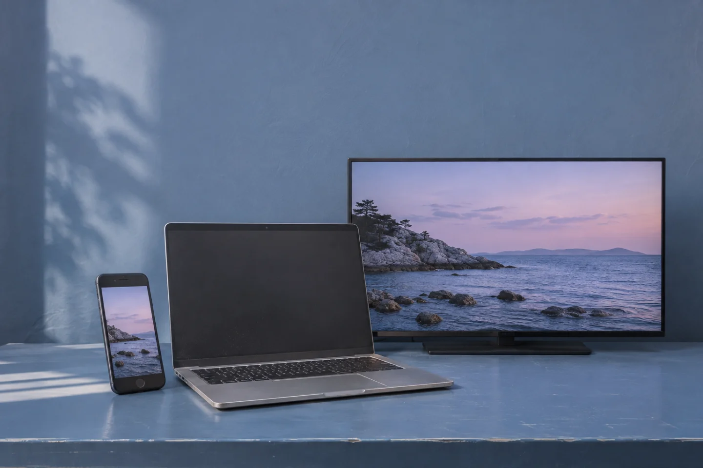
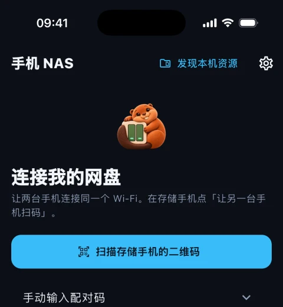

连接与权限
知道每台设备怎么连
同网优先 HTTPS 直连。离开局域网，可用支持跨网的客户端通过 Iroh 重新连接，必要时走中继。网页门户和 WebDAV 也能接入已有工具。
连接与协议
Android 和 Mac 可用作存储端。其他设备的访问能力及发布状态见 客户端对照表。
在存储端选择要共享的目录，再批准访问设备。你可以按目录决定谁能看、谁能写，也可以逐台撤销访问。

日常浏览、备份和播放在同一套客户端里。需要更细的配置时，也有协议、权限和存储端工具。
同网优先 HTTPS 直连。离开局域网，可用支持跨网的客户端通过 Iroh 重新连接，必要时走中继。网页门户和 WebDAV 也能接入已有工具。
连接与协议上传队列保留进度，完整文件经 SHA-256 校验。相册备份支持内容去重，误删可通过回收站找回，也可配置外部备份。
文件、备份与恢复先确认手边的设备能承担什么角色，再选对应的客户端。